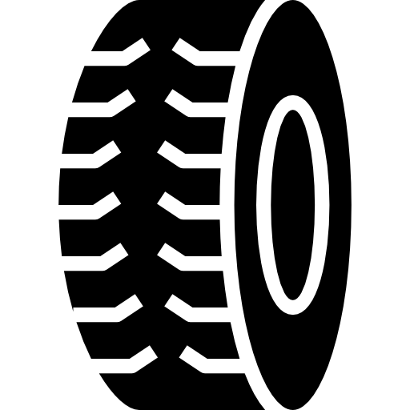
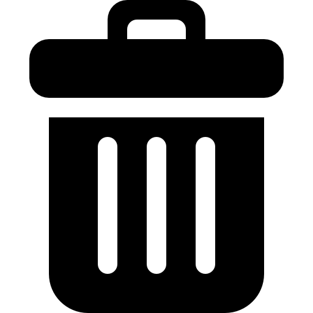
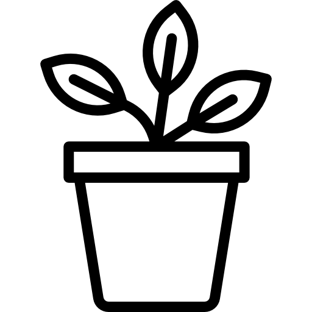
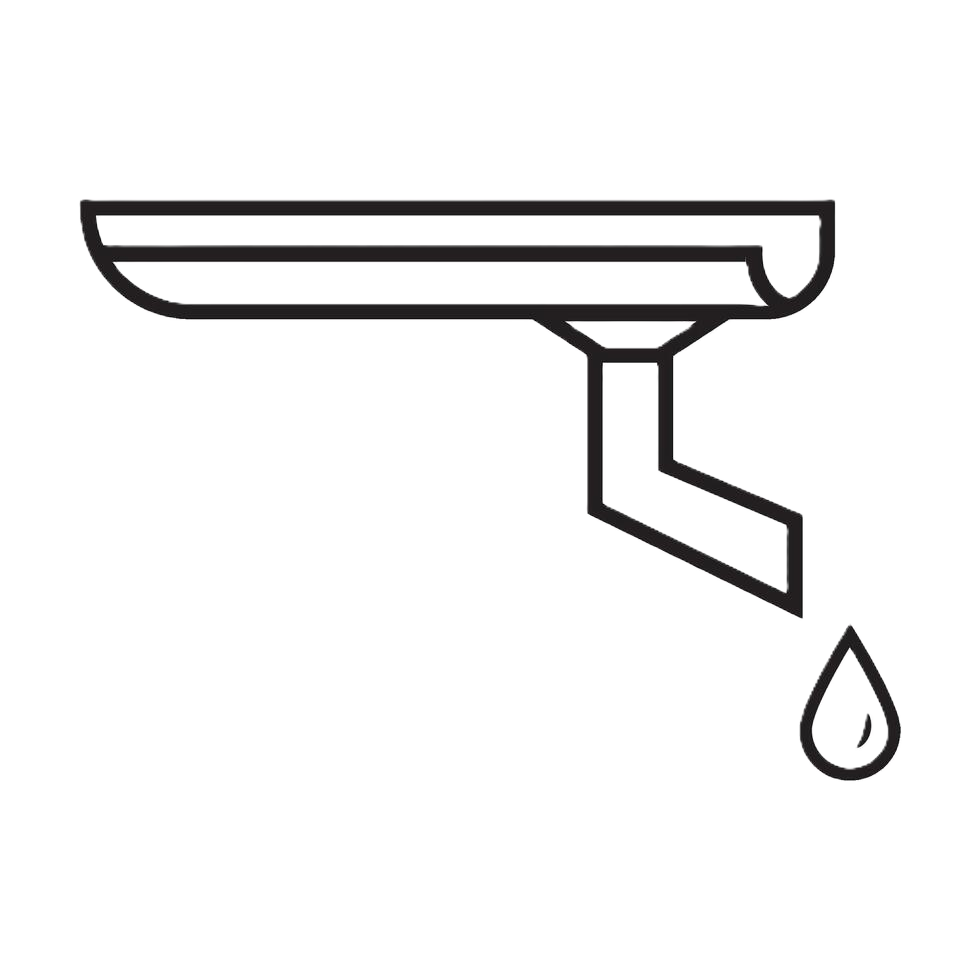

Formulário de Visita
Selecione o status da atividade técnica:
✅
Imóvel Visitado
🔒
Imóvel Fechado
🦟 Focos Encontrados
Selecione os focos abaixo. Se não houver, apenas continue.

Pneu
Lixo/Entulho
Vaso/Planta
Calha Caixa d'água
Caixa d'água
Outros
📍 Localização e Dados Finais
Buscando coordenadas GPS...